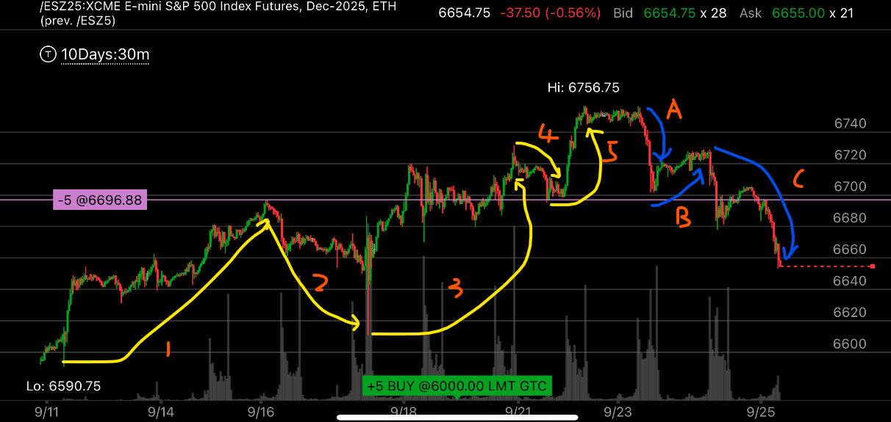
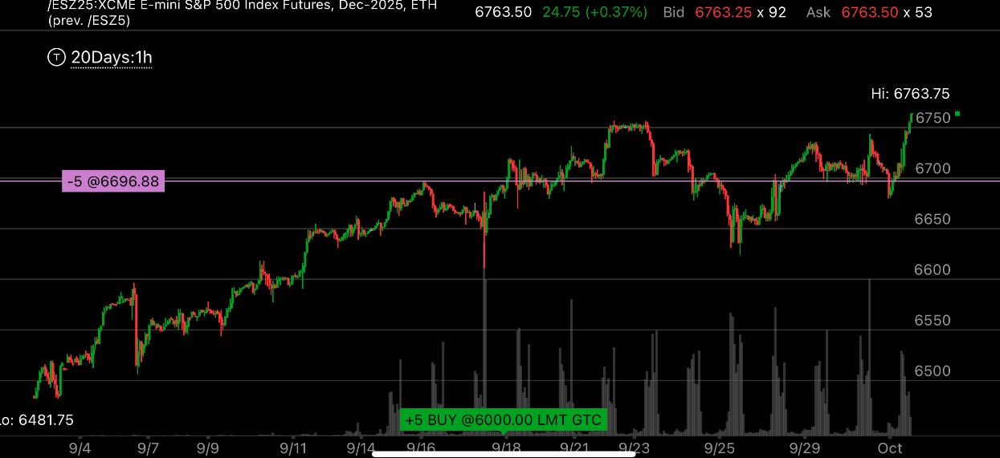
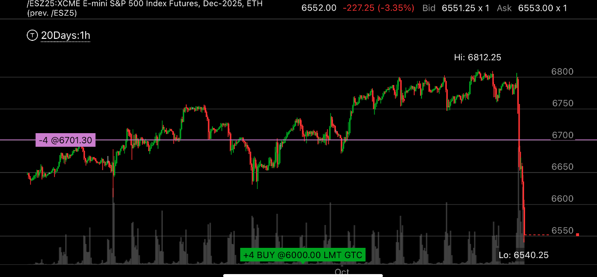
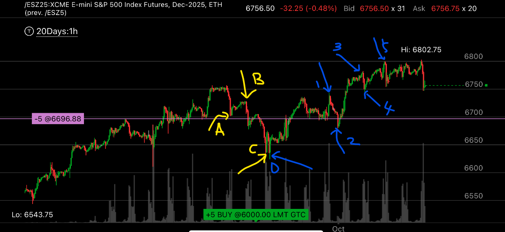

加速五浪后面跟随缓慢五浪的走势
- 先出现了加速的五浪，然后后面跟随个很小的ABC浪
- 然后它后面是一个缓慢的五浪走势，这个缓慢的走势，是起到主要作用的，前面的加速五浪已经被消耗掉了。

- 黄色的箭头表示了一个加速的五浪，第三浪和第五浪，都是加速上涨，而且是真实的超过前面的高点，不是勉强超过的那种
- 注意第四浪的低点高于第一浪的终点，说明这个是真的五浪走势。
- 蓝色的表示ABC浪，这个看起来像是一个五浪走势，而且出现了两次加速，但是注意看，如果把中间的当作是向下的第三浪，
那么它就是最短的浪，这个不符合五浪走势的定义。第三浪不会是最短的浪，所以把345看作是C浪更加合理。而且这个也符合ABC浪
跟随在5浪之后的惯例。

- 这个是一个20天的全貌，可以看到五浪后，ABC浪，然后又开始了五浪走势。

- 这也是一个全貌图，20天的，这个表示了加速五浪后，反向ABC浪，然后缓慢五浪，然后出现了暴跌，
- 这个走势也说明了 ，加速五浪的反向浪也可以很小，而缓慢五浪的反向走势，也可以很大。
- 但是这个反向浪很不标准，它只下跌了一天就结束了。这个就是缓慢浪的弊端，比较不规则。

图示:
- 这个是比较细致的图，里面ABC浪结束后，出现了缓慢的五浪
- 缓慢的五浪，它的3和5浪都是缓慢创新高。 但是符合第三浪不是最短的浪，而且，第四浪是不会进入第一浪的范围。
- 但是缓慢的五浪，也说明了，大盘会继续上涨。